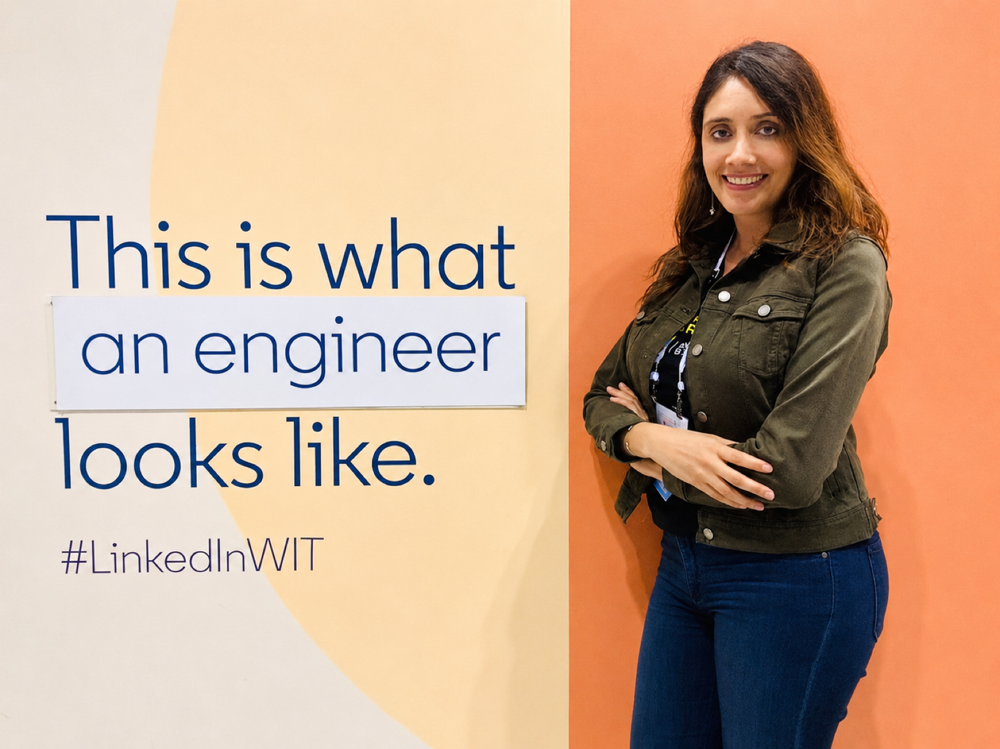
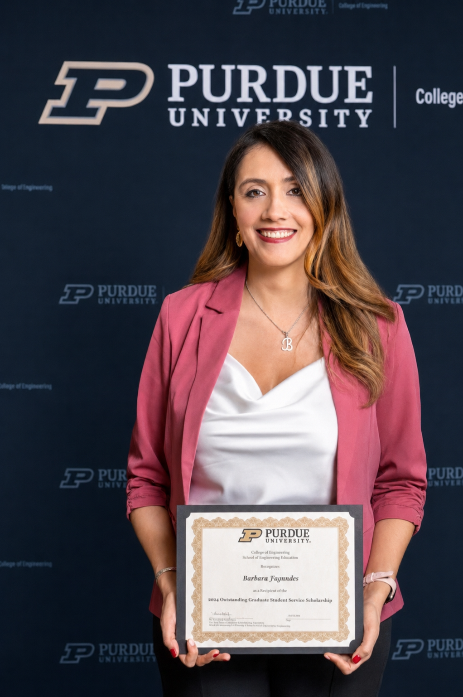
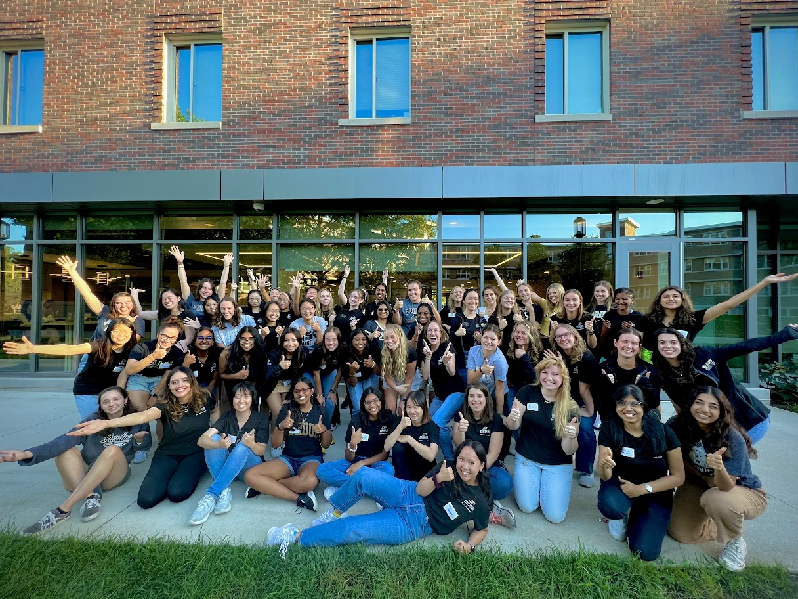
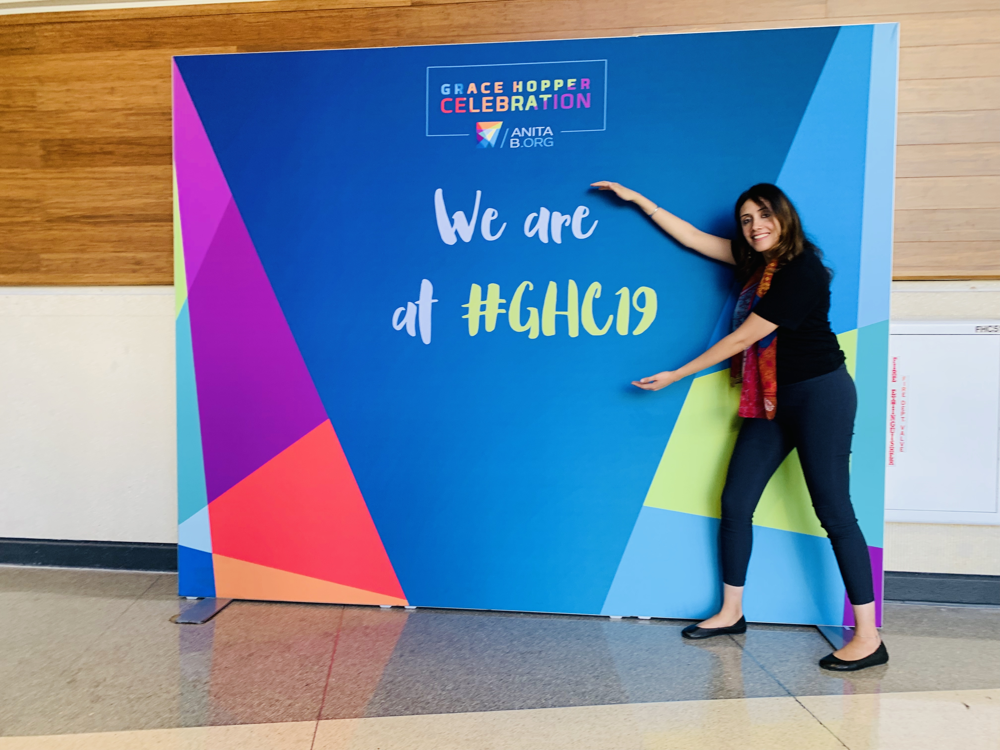

Barbara Fagundes, PhD
Especialista em aprendizagem em tecnologia, pesquisa em educação em engenharia e computação, adoção de IA
Missão e valores

Bárbara acredita que ambientes de aprendizagem bem desenhados têm o poder de mudar a trajetória de vida de qualquer pessoa, independentemente de onde ela começa. Essa crença não é abstrata. Ela nasce de sua própria experiência como primeira geração da família a concluir a graduação e o Ph.D., vinda de São Paulo, Brasil, e construindo uma carreira de pesquisa e ensino em três países e duas línguas.
Como pesquisadora, é movida por um compromisso com equidade e acesso na educação em computação e STEM, estudando como aprendizes desenvolvem pensamento computacional, como estudantes de graduação persistem e prosperam, e como tecnologias emergentes como IA generativa podem ser integradas de forma responsável aos ambientes de aprendizagem.
As an educator, she does not see her role as providing answers. She sees it as helping students develop structure amid uncertainty. Whether working with first-year engineering students navigating open-ended design projects or graduate students grappling with research methods, Bárbara prioritizes structured inquiry, collaborative reflection, and the kind of steady, intentional mentorship that helps students begin to see themselves as people who belong in the field. She wants students to leave not only with technical skills, but with the habits of thought to navigate ambiguity, work across differences, and defend their decisions with evidence.
Para Bárbara, pesquisa e ensino não são caminhos paralelos. São duas expressões do mesmo compromisso: compreender como as pessoas aprendem e criar as condições para que elas possam aprender.
Reconhecimento, serviço e comunidade
Bárbara's journey has been shaped not only by her research but by the communities she has been part of, the people she has supported along the way, and the recognition she has received for that work.
Onde tudo começou
Growing up in São Paulo, access to higher education was far from guaranteed. Coming from a public school background at a time when Brazilian higher education remained largely out of reach for students from low-income families, Bárbara was among the early cohort of students to earn a full scholarship through PROUNI, Brazil's University for All Program, just two years after it launched in 2004. Securing it required strong performance on the ENEM, Brazil's national high school exam, which at the time was only beginning to be used as a gateway to higher education and was already drawing millions of candidates competing for a limited number of spots. Earning that full scholarship and completing her undergraduate degree was not a starting point she took for granted. Those early experiences of being supported by institutions that believed in access and inclusion continue to inform how she thinks about education and who it is designed to serve.
Reconhecimento inicial
Years later, as a graduate student at Jackson State University, Bárbara was awarded a Diversity Scholarship recognizing international students from underrepresented backgrounds, a recognition that echoed the same spirit of access and inclusion that had shaped her own educational path.
Serviço de destaque em Purdue

During her doctoral studies at Purdue, Bárbara received the Outstanding Service Scholarship Award from the College of Engineering, nominated by her advisor Dr. Tamara J. Moore for six years of contributions that extended well beyond her research. The award reflected a pattern of showing up for her community in ways that were rarely required and never small.
At the university level, she represented the School of Engineering Education in Purdue's Graduate Student Government, where she co-authored legislation and played an active role in implementing a late-night shuttle service for graduate students, volunteering her own weekend evenings to ride along with the driver, monitor ridership data, and recruit fellow students to support the initiative. She also served on the Grant Review and Allocation Committee, reviewing student applications for professional development and community-based funding.
Construindo comunidade por dentro
Within her department, Bárbara co-chaired the ESL and Multicultural Committee of the Engineering Education Graduate Student Association, where she organized cultural events, connected with guest speakers, and co-created "We, the Aliens," a six-episode podcast giving voice to the experiences of international students in U.S. higher education. The podcast resonated deeply with fellow graduate students, many of whom approached Bárbara and her co-hosts months and even a year later to share how the episodes had encouraged them through difficult periods.
She also mentored incoming Ph.D. students across multiple cohorts, going well beyond the formal mentorship program, inviting prospective students to dinner, giving campus tours, and offering her home as a place to stay during visits. During the COVID-19 transition to online learning, she also served as an Academic Mentor for the School of Engineering Education, supporting Ph.D. students through one of the most disorienting periods in recent academic history. And in 2020, she served as a judge for the first fully virtual SURF Symposium, evaluating undergraduate research poster presentations at a moment when the entire research community was learning to connect across screens.
Mulheres na engenharia

Bárbara's commitment to women in engineering has shown up in multiple ways throughout her career. As a member of Purdue's Women in Engineering outreach team, she helped mentor pre-college girls in engineering activities both on and off campus. In Summer 2022 alone, the team reached over 1,300 girls, introducing them to engineering through hands-on activities and conversations about what a future in the field could look like.
That same year, she was selected by the Purdue Society of Women Engineers to attend WE22 in Houston, the world's largest conference for women in engineering and technology. It was more than a professional event. Meeting trailblazers and emerging leaders from across industries, in conference sessions, in casual conversations, even in line at Starbucks, left a lasting impression. Hearing their stories, their struggles, and their breakthroughs was both humbling and energizing.
A visit to NASA's Johnson Space Center made the experience unforgettable. She returned to Purdue with renewed confidence and a deeper sense of purpose.
Earlier, in 2019, Bárbara had been selected as a Grace Hopper Celebration Scholar, earning a place at the world's largest conference for women in computing in Orlando, Florida. Being recognized as a GHC Scholar placed her among a select group of students chosen for their potential and their commitment to advancing women in technology, an experience that planted seeds for everything that followed.

Retribuição além do campus
That commitment to community extended beyond campus. As a Student Brand Ambassador for BRASA Global, Bárbara delivered virtual presentations via Zoom to students at Brazilian universities, helping low-income students learn about international scholarships and educational opportunities, work rooted in her own experience as someone who once navigated that same uncertain path.
Serviço acadêmico
Bárbara has contributed to the broader scholarly community as a reviewer for the Journal of Pre-College Engineering Education Research and the American Society for Engineering Education, evaluating submissions for rigor, clarity, and contribution to the field. She is a member of both ASEE and the Society of Women Engineers.